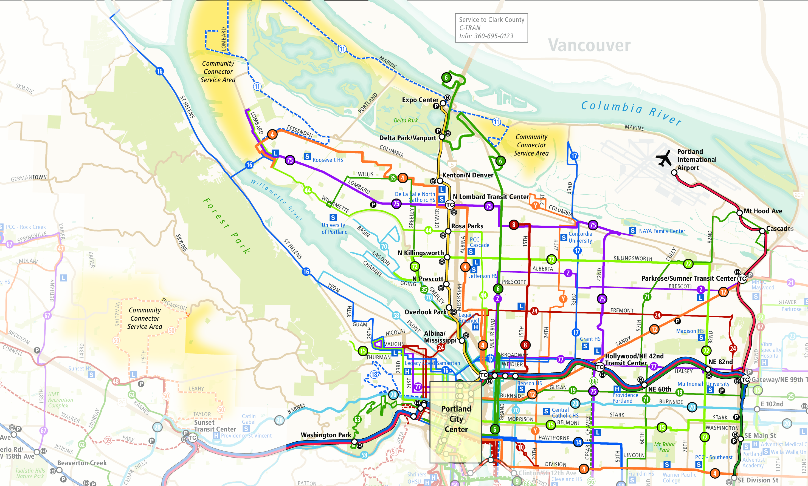
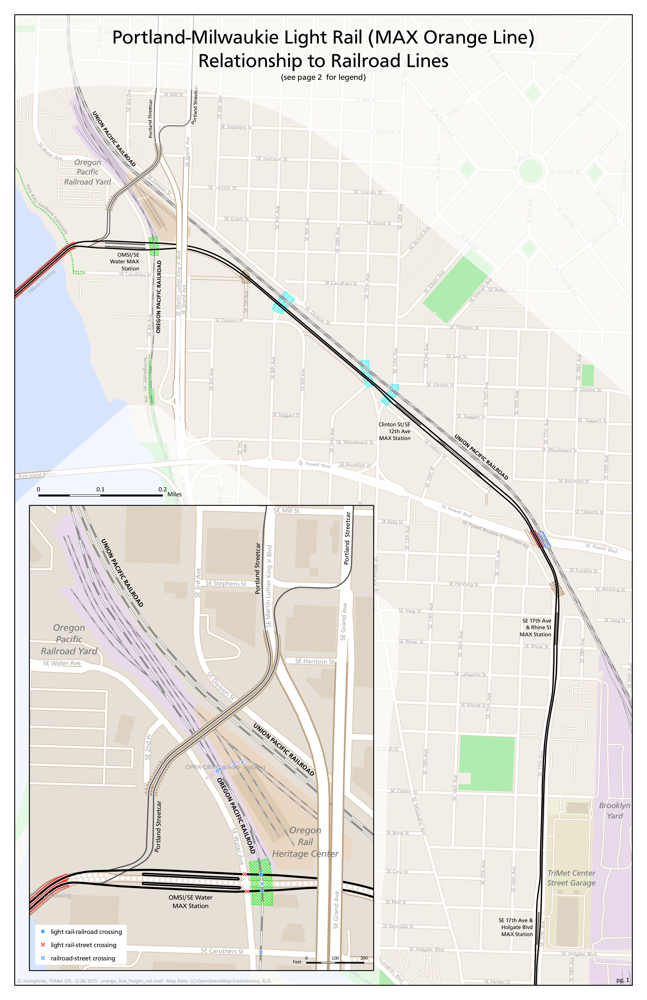
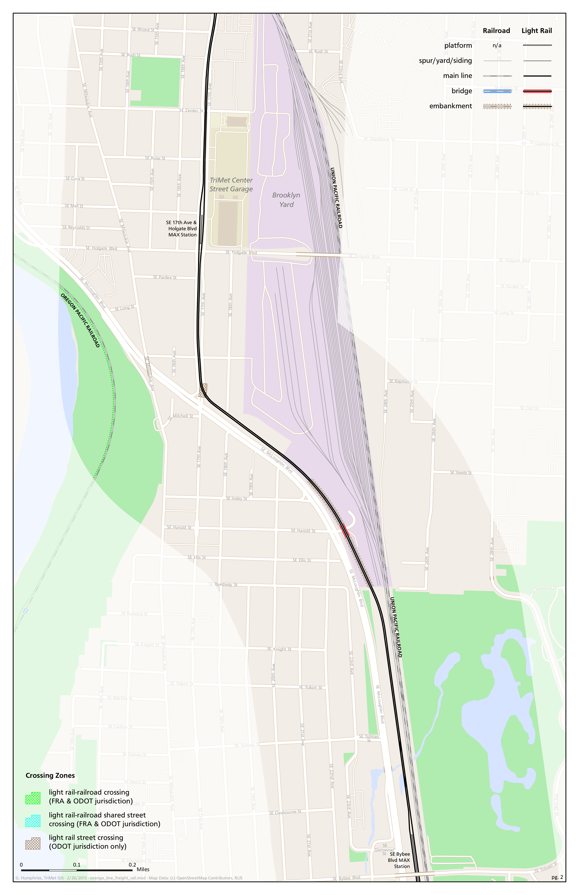
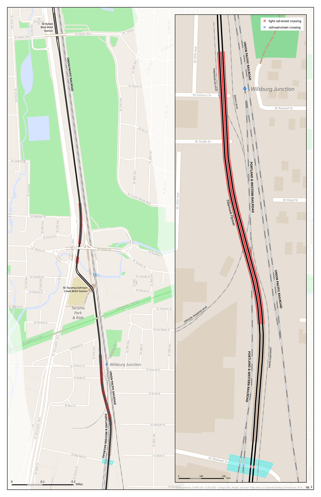
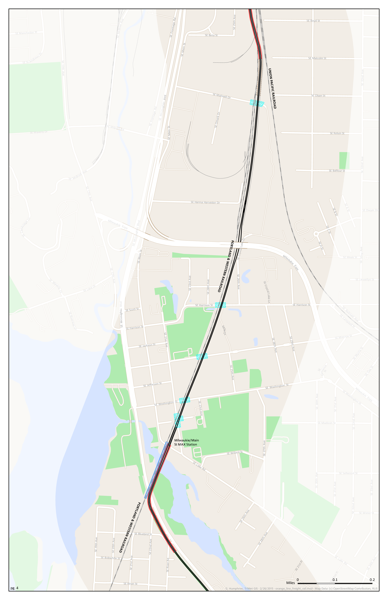

a gis analyst @trimet 2014
1>web mapping.
>development around light rail map
multi-scale.
interactive.
aside: isochrones.
powered by open source.
openlayers.
geoserver.
2>in house census/acs database.
running on maps7.
100% of latest acs data.
efficiency increase.
big for title vi.
error reduction.
improved, submitted pull request.
tiger expertise.
3>'one-click' automation.
shell scripting.
>control map servers (bash).
>rlis update.
data backed up and refreshed, file permissions granted, etc.
>rlis2osm.
what was weeks is now minutes.
>tiger-postgis geocoder.
installable on any trimet map server.
>crontab.
'zero click' automation.
4>improvements to osmloader/osmsplit.
osmupdate.
faster.
edits populate within 1-2 hours.
5>sep vision maps
gis2ai.
loss of spatial reference.

6>orange line freight rail map.
arcpy.mapping




7>expertise w/ oracle db.
>passenger census.
>survey data route info.
cx_Oracle.
out of agency requests.
8>gis2gis & gis2cad conversions.
gdal.
vector: ogr2ogr.
raster: gdal_translate.
increased fluidity between formats.
questions?